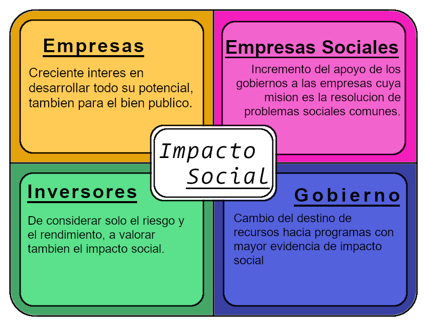
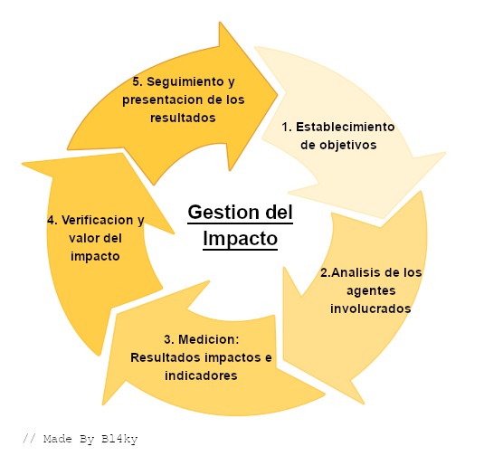
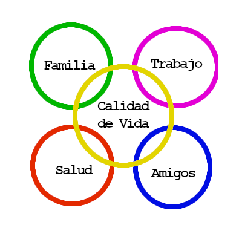

Es un cambio significativo y positivo que aborda un desafío de asimilar para una sociedad. Principalmente se
entiende por los cambios que ocurren a las personas y comunidades ocurridos cómo resultado de una acción, actividad o proyecto.
Estos tienen diferentes Agentes que hacen y afectan los impactos sociales, estos son:
1ra Actividad del Módulo
| Curso |
1003 Jornada Tarde |
Estudiante |
Martín Steven Hernández Ortiz |
| No. de Documento |
1.013.107.870 |
Telefono |
313 3391259 |
| Correo Electronico |
martinstevenhernandezortiz@gmail.com |
Fecha de Entrega |
09/02/2021 |
Realizar el Esquema de los Agentes del Impacto social en la guia.

Los Agentes del Impacto Social. Hernández. 09/02/2021.
Elaborar un análisis de cuatro párrafos frente al siguiente video.
"Documental" Impacto Ambiental
Los Problemas de la Humanidad son hechos unicamente por su estupidez e ignorancia al intentar arreglar algo.
Es un pensamiento que tengo cada vez que se toca un problema dado por la humanidad. Y en este caso tenemos un problema importante
generado por la humanidad, el Impacto Ambiental. Viendo el contenido de esté "documental", podemos ver los impactos
ambientales que ha hecho la humanidad a lo largo de su corta historia de industralización. Voy a tomar cada uno y explicarlos desde
varias perspectivas, ya que el "documental" solo muestra imagenes del problema sin ninguna explicación o definición.
Sobrepoblación
El gran "problema" de la era contemporanea, mucha gente para un planeta tan pequeño ¿verdad? No, dependiendo de la situación. Pero primero
hablemos de su origen y el porqué de este problema. Todo inicia en el siglo XVII, inicios de la revolución industrial, donde la gran mayoria de
la gente trabajaba en agricultura haciendo comida, pero aún así habia gran pobreza y hambruna en la gente. Con la llegada de la tecnología
se empieza a poder empezar a hacer el proceso de obtener comida y diferentes comodidades cómo ropa, hogar, agua potable, entre otros,
muchisimo más fácil. ¿Pero esto que tiene que ver que haya mucha gente? Sencillo, antes las familias por la baja calidad de vida,
producción y gran porcentaje de muertes, lo mejor era tener 4 - 10 hijos para poder sobrevivir o almenos tener una vida un poco más llevadera.
Pero con la llegada gradual de la tecnología, las personas se dieron de cuenta que era un desproposito tener tantos hijos si ya se contaba
con una mayor calidad de vida. Entonces poco a poco, junto a el gran desarrollo de la tecnología, las personas han parado de tener
hijos a grandes cantidades o inclusive no tiendo hijos, cosa que hace otro problema pero no es tratado acá ya que el ser humano es el
"ser más malo de toda la existencia del universo" pero bueno, esto tiende generar un fenomeno en el que, mientras la gente
tenga mayor calidad de vida va a tener solo la necesaria cantidad de hijos.
Pero ¿qué pasa con los lugares que tienen hijos a grandes cantidades, generalmente en lugares de poco ingreso? Eso mismo, se tiene
varios hijos por estupidez o ignorancia para arreglar algún problema, siendo este problema la baja calidad de vida, ya que
5 hijos trabajando va a generar un ingreso mayor que solo tener 1 solo. Obviamente esto va a costar la calidad de vida
de los padres y los mismos hijos. Pero este problema se puede evitar con educación para poder generar empleos más especializados y por
ende con mayor ingreso.
Cambio Climatico
Es totalmente verdadero que el mundo esta teniendo cambios en su clima, esto es generado tanto naturalmente por el mismo
planeta, cómo ocurrio con las eras glaciares en el planeta, tanto por la contaminación del ser humano. De este problema no hay
tanto que decir, solo que el ser humano ha contribuido a este problema bastante tiempo. Y es gractificante que se tenga diferentes
alternativas y nuevas tecnologías.
Pérdida de la Biodiversidad
Es increible la grandes perdidas que se han tenido en el mundo de varias especies de animales. Siembargo ya se esta teniendo diferentes
proyectos y procesos para evitar más de estas perdidas, cómo evitar la cacería de los animales en peligro de extinción cómo los
rinocerontes haciendo diferentes centros de "cultivo" de sus cuernos, que son usados para diferentes objetos.
Pero también debo recalcar que hay una gráfica o estadisticas que son totalmente alarmistas, donde se expone que el 76% de las especies de
agua dulce han disminuido en su IPV. Que ese ultimo dato cambia todo lo anterior, con una busqueda rapida, podemos ver que el IPV o
indice de Planeta Vivo, combina los datos de miles de especies con estilos de vida y estados de conservación diferentes.
Entonces la muerte un mosquito o una mosca no va a tener la misma importancia que si se muere un oso panda.
Siembargo de debería disminuir con la muerte de los animales usando diferentes estrategias, cómo la mendionada anteriormente.
Ciclos de Fosforo y Nitrogeno
No tengo mucha información de la contaminación de químicos por parte del humano, pero sin embargo no puedo hacer nada dado a que
el video tampoco entrega nada de información.
Acidificación del Agua
Tampoco tengo mucha información pero contrario a el punto anterior, el video entrega un pedacito de información, en el cual
nos explica que las moleculas de CO2 reacciona con el agua del mar, haciendolo más acido y afectando de alguna forma
el medio acuatico. Pero siembargo esto podría ser un subproblema o una causa de los gases invernaderos. Cosa que ya se tiene en
mayor parte una excelente solución.
Contaminación de Basura en General
Los residuos son el problema de todos, ¿no? No tanto, se ha podido ver que en lugares que se tiene un indice mayor de riqueza se
contamina muchisimo menos que en lugares con menor riqueza, esto por las tecnologías, cultura y metodos de desecho del lugar.
Desgaste de la Capa de Ozono
El desgaste de la capa de ozono es otro subproblema de los gases invernaderos. Eso lo voy a retomar más adelante.
Exceso de Pesca
El Exceso de Pesca es un subproblema de la Biodiversidad. Ya me estoy a empezar a entristecer por este "documental" más que reirme.
Deforestación
La Deforestación es en parte una causa de varias de las anteriores, pero principalmente del hecho que se no se pueda usar el
espacio que ya tenemos de una forma más eficiente. Y la tala de arboles por sus materiales es más que obvio que van a plantar más
arboles para no quedarse fuera del negocio.
Ahora vamos a ver cuales son las posibles respuestas para todos estos problemas, por parte del "documental". Cuales algunos no estan
tan mal, pero creo que la tecnología de hoy en día hay mejores soluciones. Partiendo desde el desarrollo sustentable, cosa que
casi no he escuchado, pero el video nos tiene una explicación sencilla. En las tecnologías, más que todo, son lo más importante
del desarrollo sustentable.
Explicado por el "documental" es el concepto de las medidas en las cuales se ponen una medidas encaminadas a la administración
eficiente de los recursos naturales y responsable por parte del Ser Humano para la preservación del equilibrio ecologico. Sin entrar
en los posibles problemas sociales, politios y economicos que puede llevar las medidas, vamos a dejarlos de lado y vamos a entrar
a lo que personalmente me importa, las tecnologías que se van a usar para lograr las medidas.
Reciclaje de Basura Inorganica
Es una buena propuesta, en la cual se esta buscando que hacer con los desechos que no tenemos, algunos los han usado para hacer materiales de
construcción cómo unas baldosas de plastico reciclado, o cualquier manualidad que podemos hacer con los diferentes recipientes plasticos.
Estaría bien pensar en una maquina que pueda optimizar el reuso de estos desechos.
Reciclaje de Basura Organica
Sería raro antes que no estuviera esta tecnología casí millenaria. Es la más sencilla de hacer, necesitando solo conocimientos básicos
de botanica. Pero igualmente no estaría mal diseñar una tecnología para mejorar su uso.
Energía Eolica, Solar y Undimotriz
No he escuchado mucho de la fuente de energía Undimotriz, y eso que estoy en diferentes frentes de discusión de las fuentes de la energía,
por lo tanto no tengo mucha estima a que sea una fuente de energía que vaya a solucionar todo el problema de la quema de carbón, gas y petroleo.
Sin embargo, la Energía Solar y la Energía Eolica estan bién, hasta que quiere escalar la capacidad de dar energía con situaciones más
extremas. Cómo lo son días nublados, sin viento, o en general que no puedan producir. Y eso es una gran desventaja que no pueden
producir siempre a un ritmo favorable. Y el almacenamiento de energía en baterias sería un desproposito ya que se contaminaría mucho más
o lo mismo que usando las energías fosiles de siempre, por procesos de extración, uso y procesamiento de litio y diferentes alkalinos.
Pero tampoco podemos parar de producir energía, el hacerlo podría llevar a el bajón más grande de calidad de vida de la historia o
los precios se volverían absurdamente caros haciendo que en todo el mundo solo los más ricos puedan tener electricidad en el día
y muy limitado. Entonces ¿debemos inventar ahora una forma de energía que sea buena para el medio ambiente y que logre mantenernos
o mejorar nuestras capacidades electricas?
No. Eso ya lo hicimos y llegamos a su mayor etapa de producción en los 60s. Y es la Energía Nuclear, no voy a hablar
mucho de ella y sus maravillas pero aún así aquí va una lista resumida de sus beneficios:
- Materiales de Fisión en abundancia en casí todo el mundoo
- Manejo de residuos de gran planeación y elaboración
- Minimos residuos dejados por los nuevos reactores de 4ta Generación
- Administrar enormes cantidades de energía por extremadamente muy poco material fisionable
- Capacidad de poder ser construida en cualquier lugar del mundo o universo
- En una gran cantidad, poder administrar los precios más bajos de electricidad del mundo
Aunque pensandolo, sí, sí debemos terminar de inventar una forma de energía buena para el medio ambiente, llamada Energía Nuclear de Fusión.
Energía que si llegamos a lograr de terminar de desarrollar, la humanidad dejara su sucio pasado de energías fosiles y inclusive renovables,
pasando a una época de energías infinitas para nuestra existencia.
El problema de la energía nuclear, no es ella en sí, si no los idiotas que se niegan a aprender y atesorar los resultados que nos da esta
tecnología, y creo que los conoce profesor, algunos se llaman Greenpeace cuales intentan vender la idea de 100% energías
verdes*. Solo que cada vez no puedan dar a basto estas, van a usar gas Ruso. Cosa un "poco" hipocrita.
Ecoturismo
Es simplemente turismo con una orientación de la vida del local del lugar, cosa que es más que todo inmersiva en el viaje, pero no tan
"desarrollo sustentable". Tomando en cuenta que se tomo un avión para llegar a el lugar, talvez el Ecoturismo no haga una gran diferencia,
aún así si se va a pata a el lugar.
Carros Electricos
Pues ademas de tener todo el problema de la obtención las baterias de los carros, estan bastante bien, sin embargo lo mejor sería
mejorar los modelos actuales de carros electricos para poder hacerlos más obtenibles para el público general & mejorar la eficiencia
de los carros de combustión para que contaminen mucho menos que versiones anteriores, es decir lo que se lleva haciendo desde siempre.
Listo ahora solo nos falta revisar nuestra huella ecologica, ¿Qué estoy haciendo para mejorar el lugar en el qué estoy parado hoy? Sencillo
mejorar y apostar por la mejor tecnología que tenemos hasta el momento y apoyar a el desarrollo de estas mismas o nuevas tecnologías para
poder obtener una mejor eficiencia y Limpieza de estas.
Otra cosa, profesor, ¿Usted miro el video "documental" que dejo en esta tarea? Ya se que para este momento penso que solo iban a ser
5 parrafos, pero mi conciencia no va a dejar que pase tremendo video con lleno de huecos, fallos y falta de información sin dejar ninguna
critica o escrito sobre el video. Le recomiendo que mire su contenido de una forma más critica, mire que su contenido almenos si tenga
coherencia o almenos un esfuerzo.
Recuerde profe, talvez mirar 5 o 10 videos sobre el tema no le va a afectar tanto cómo va a afectar un mal video a nuestra educación.
Menos mal que los jovenes no solo toman lo que les da el profe cómo verdadero si no que buscan más sobre el tema ¿verdad? La verdad
siento lastima por los jovenes que han tenido que ver este "documental" por mala practica y desarrollo de actividades de los profesores
incluyendome a mi y a el salón de 1003 J.T.
Elabore el siguiente esquema de Gestión del Impacto Social

La Gestión del Impacto Social. Hernández 09/02/2021.
Realizar el analisis del Video. Usando los pasos del
Esquema de la Gestión del Impacto Social.
Establecimiento de Objectivos
Generar Energía con la planta hidroelectrica, para poder dar un gran sustento de está a Colombia y poder exportar parte de esta energía
a países aledaños, cómo Ecuador.
Analisis de los Agentes Involucrados
Comunidades del Rio Cauca, EPM (Empresas Publicas de Medellin), Gobierno Colombiano, Grupos Armados.
Medición de Resultados Impactos e Indicadores
- Grandes daños a las estructuras, cómo puentes, en las cercanias del Rio Cauca
- Bajada en la calidad de vida de las comunidades del Rio Cauca
- Incremento de trabajos ilicitos, por el desempleo causado por la falta de pesca en el Rio Cauca
- Entregar Energía despues de ponerse en marcha en 2022
Verificación y Valor del Impacto
- Grandes daños a principalmente puentes en la cercania del Rio Cauca
- Falta de ayuda a las comunidades del Rio Cauca por parte de las empersas y organizaciones involucradas en Hidroituango
- Falta de oportinidades en la zona por la falta de pesca, haciendo que los pescadores vayan a conseguir trabajo raspando coca en organizaciones armadas
- Generación de Energía con generadores Hidroelectricos, dando suficiente energía para cubrir más del 50% de la energía Colombiana
Seguimiento y presentación de los resultados
2da Actividad del Módulo
| Curso |
1003 Jornada Tarde |
Estudiante |
Martín Steven Hernández Ortiz |
| No. de Documento |
1.013.107.870 |
Telefono |
313 3391259 |
| Correo Electronico |
martinstevenhernandezortiz@gmail.com |
Fecha de Entrega |
10/21/2021 |
Realice la lectura del siguiente fragmento de texto y elabore una reflexión de cinco (5) párrafos sobre la temática del texto.
Es bastante lamentable, triste y horrible. Es increible cómo se destruyo tanto avance en toda Colombia para combatir el hambre,
para que al final solo unas restricciones. Quiero reflexionar principalmente sobre estas restricciones, partiendo desde un punto
de vista a el favor y en contra. Y una reflexión final cómo conclusión de ambos puntos de vista.
A favor, lo principalmente bueno es que Colombia fue uno de los primeros paises latinoamericanos en responder de una forma rápida
a el virus. Dandole una ventaja para poder eliminar la propagación y infectación de esté. Esta ventaja fue vista cómo un nivel
menor de contagios y de muertes.
Con el uso de protocolos, herramientas y otros para nuestra protección también se pudo evitar contagios. La cuarentena fue
un golpe extremo para todos dado a que gran parte de Colombia trabaja y vive al día. Aún así la cuarentena hubiera durado
1 mes, hubiera tenido efectos en los trabajadores informales.
En contra, cambios drasticos cómo las cuarentenas a nuestra economía, la cual es principalmente informal, le afecto negativamente
con el pasar del tiempo. Estos efectos se ven principalmente en la seguridad alimentaria en el país.
Además, un dato no mencionado en el texto, diferentes enfermedades mentales cómo la ansiedad, depresión y otros se han
manifestado a una mayor escala, sobretodo en los más jovenes.
Y el levantar parte de las restricciones para la mayoria de las personas aliviarian estos problemas. Además de contar de que
la mayoría de casos extremos del virus han sido casí totalmente en personas mayores y en personas con enfermedades que
afecten el sistema cardio - pulmonar.
Pero para estos grupos en peligro del virus se tiene una super creación que se desarrollo unas con nuevas y asombrosas
tecnológias, La Vacuna, con está se puede inmunizar a las personas en riesgo y evitar casos extremos en ellos.
En conclusión, aunque iniciamos de una forma rápida nuestras prevenciones ayudarón a mitigarlo en parte, pero no totalmente.
Ahora que tenemos la situación perfecta para salir de estas restricciones con las herramientas necesarias, deberiamos
aprovecharla y seguir con la tendencia de incrementar la seguridad alimenticia en Colombia.
Solo que ahora deberiamos llevarla a el 100%.
Elabora el siguiente esquema sobre el concepto de Calidad de Vida.

Calidad de Vida. Hernández 10/21/2021.


{kind=link}